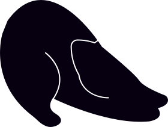
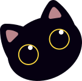

Hola, soy Sabrina.
Diseñadora ux/ui,
maquetadora web y cantante
Diseño experiencias digitales que conectan con las personas
y hacen su día a día más simple.




Sobre mi
Me encanta crear experiencias digitales que sean accesibles, intuitivas y, sobre todo, agradables de usar. He tenido la oportunidad de transformar páginas y apps, buscando darle ese toque especial que marca la diferencia, diseñando y prototipando con herramientas como Figma e Illustrator.
También he podido aprender muchísimo durante una pasantía en diseño UX/UI, donde reforcé mi pasión por cuidar cada detalle. Para mí, el diseño es una forma de hacer la vida un poco más simple (y feliz) para las personas. Cada proyecto es una nueva chance de aprender y darle vida a algo genial. 😊

Rediseño de la web de RousBeauty
Rediseño de la web de RousBeauty, una tienda de productos de belleza. El objetivo era mejorar la experiencia del usuario y aumentar las conversiones.
Ver proyecto
Caso de estudio SADAIC
Propusimos modernizar y optimizar el sitio de SADAIC para facilitar la información y servicios para los compositores y autores musicales en Argentina.
Ver proyecto
Caso de estudio Crunchyroll
Al rediseñar la app de Crunchyroll buscamos hacer que navegar y descubrir contenido sea tan emocionante como el anime mismo.
Ver proyecto
Caso de estudio Mapp
Mapp es una aplicación móvil que diseñé como “billetera virtual” para la tarjeta de transporte en Argentina llamada SUBE.
Ver proyecto